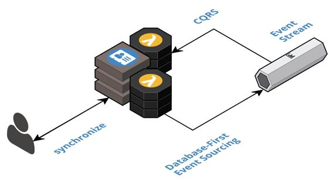

Offline-first database
Persist user data in local storage and synchronize with the cloud when connected so that client-side changes are published as events and cloud-side changes are retrieved from materialized views.
